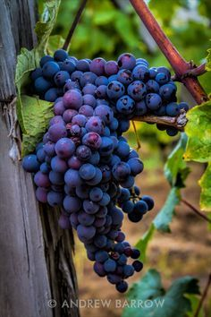

Създадох този така наречен сайт за нас.
По време на Първата световна война – 1915 – 1918 година в селото е дислоциран щабът на Втора българска армия. През лятото на 1916 година, на два километра северно от селото е изградено летище на Първо аеропланно отделение. На летището при Левуново са базирани „ловджийски“, т.е. изтребителни самолети. "Вижте повече тук"
Така е изглеждало нашето село преди близо един век, но нека се върнем в наши дни, за да се запознаем с богатствата, с които сме дарени днес.
Лозаро-винарският район „Долината на Струма“ (Югозападен) е разположен по поречието на река Струма и въпреки малката площ, която заема, той е популярна дестинация за туристите както от България, така и от чужбина. Тук климатът е с изразено средиземноморско влияние и този район е най-топлият за България. Тук са разпространени сортовете Широка мелнишка лоза, Мелник 55 или Ранна мелнишка лоза, Рубин, Руен, Керацуда, Тамянка, Мерло, Кабернесовиньон.
